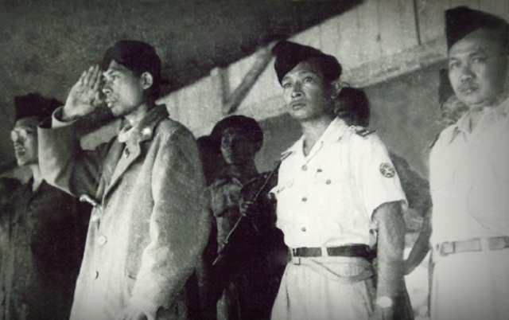

| NAMA PAHLAWAN | DESKRIPSI | MEDIA |
|---|---|---|
| Soekarno | Dr.(H.C.) Ir. H. Soekarno (lahir di Surabaya, Jawa Timur, 6 Juni 1901 ) adalah Presiden pertama Republik Indonesia yang menjabat pada periode 1945–1967. Ia memainkan peranan penting dalam memerdekakan bangsa Indonesia dari penjajahan Belanda. Ia adalah Proklamator Kemerdekaan Indonesia (bersama dengan Mohammad Hatta) yang terjadi pada tanggal 17 Agustus 1945. Soekarno adalah yang pertama kali mencetuskan konsep mengenai Pancasila sebagai dasar negara Indonesia dan ia sendiri yang menamainya Sumber : wikipedia.com |
|
| Jenderal Soedirman | Jenderal Besar Raden Soedirman adalah seorang perwira tinggi Indonesia pada masa Revolusi Nasional Indonesia. Sebagai panglima besar Tentara Nasional Indonesia pertama, ia adalah sosok yang dihormati di Indonesia. Terlahir dari pasangan rakyat biasa di Purbalingga, Hindia Belanda, Soedirman diadopsi oleh pamannya yang seorang priyayi. Sumber : wikipedia.com |
 |